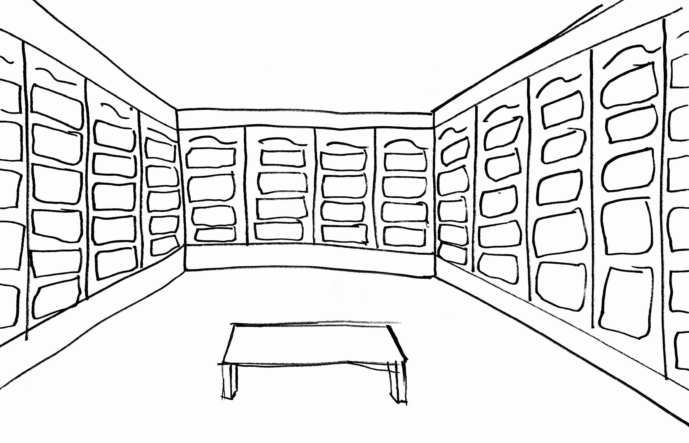
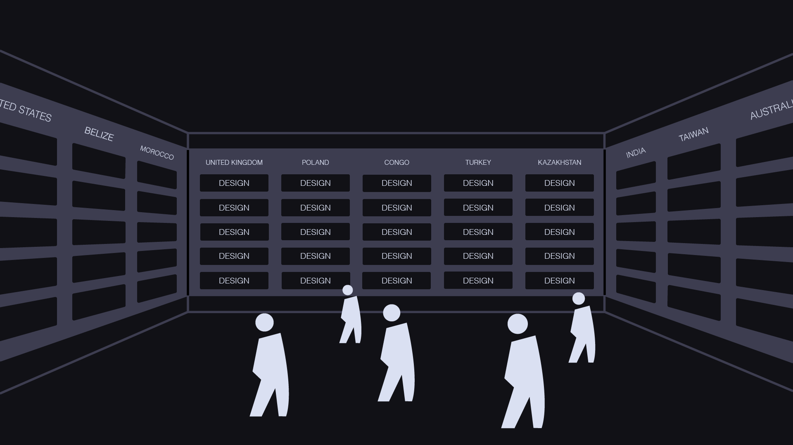
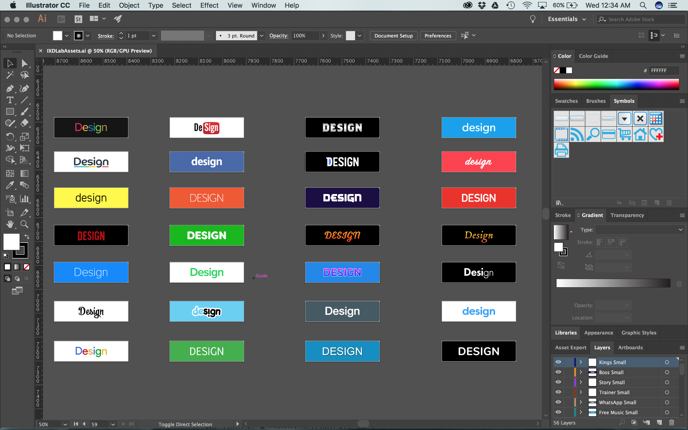
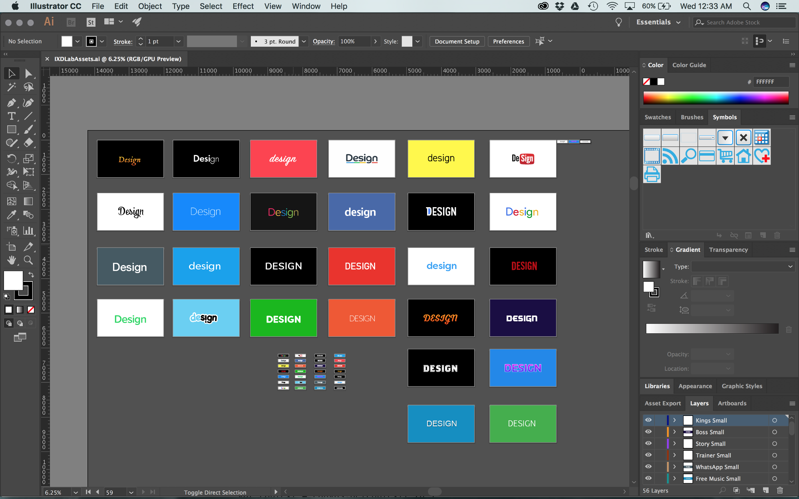
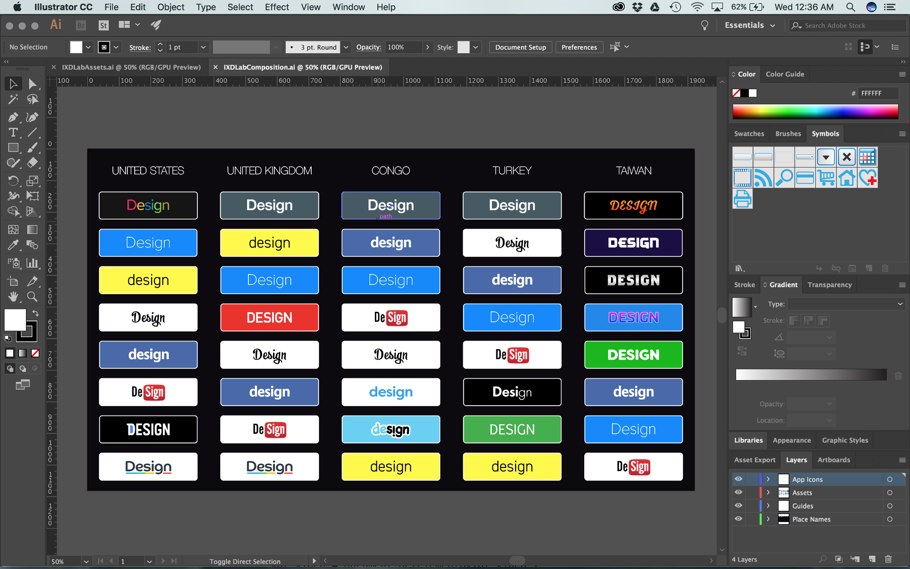

Designed Exploration Into Community and Typography, a responsive kinetic typography piece that combined SVGs, a JavaScript animation library (Anime.js), and a JavaScript tracking library.
Dates: March 2017 - May 2017
Team: Scott Dombkowski
For the final assignment of our Prototyping for Interaction Design course, we were tasked with creating a responsive kinetic typography piece with interactive elements.
To achieve this, I created a piece that combined SVGs, a JavaScript animation library (Anime.js), and a JavaScript tracking library (Tracking.js). The piece tracks the number of people in a space, displays the most popular apps in various locations around the world, and updates (This has not been implemented) based on real-time data.
An Exploration Into Community and the Typography of Apps Demo Video
Concept
Viewers would enter a room lined with screens and cameras running tracking technology. The trackers note how many people are in the room. That is then reflected in the animation. Like apps, the larger the community the more engaging the animation is. The screens are continuously updated based on real-time data (which has not been implemented).
Viewers not only see the most popular apps around the world; they can also see patterns in the typography of those apps. They can view if the most popular apps in certain parts of the world are drawn to certain typographic elements.
They also come to undertstand power of a digital platform’s community. The bigger the community, the more engaging the animation.
The piece also explores how by engaging in these communities, we have created an environment where we are surrounded by digital platforms. By including locations all over the world, viewers can see how this environment is not unique to America, but common to other parts of the world.

Early Concept Sketch

As users enter the room, the animation develops.
Working Demo
To create a working demo, I implemented the piece within a webpage. Instead of multiple screens and cameras, I utilized a computer screen and webcam. You can see how I executed this below.
Visual Assets
A number of visual assets were created for this project. I created a set of elements that replicated the typography of the app’s icons and word marks.

Smaller Elements

Larger and Smaller Elements
These elements were combined into an overall composition that was then saved as a SVG and moved into a HTML file.

Overall Composition
Technology
The piece utilizes HTML, CSS, and JavaScript. The JavaScript includes Tracking.js and Anime.js.
Tracking.js is included to track the number of faces captured by a computer’s webcam. The tracking technology was not able to continuously track an individual’s face. One person in the webcam could trigger the tracker more than 5 times in a second. To overcome this, I ran the tracker for 100 millisecond windows. This way, an individual could only trigger the tracking technology once.
Anime.js was used to animate each icon and the overall composition. To do this, I created separate animations for each individual wordmark. These animations were then added to a larger timeline. With Anime.js, I was able to set the duration, offset, and easing function of each animation.
Code was created to combine the Tracking.js and Anime.js functionality. This code breaks up the animation into specific segments. Segments are played based on the number of people visible by the webcam. Once a segment of the animation is completed, the face tracking code checks the number of people visible in the webcam and plays the next segment of the animation.